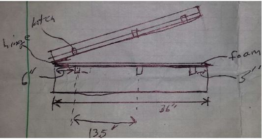
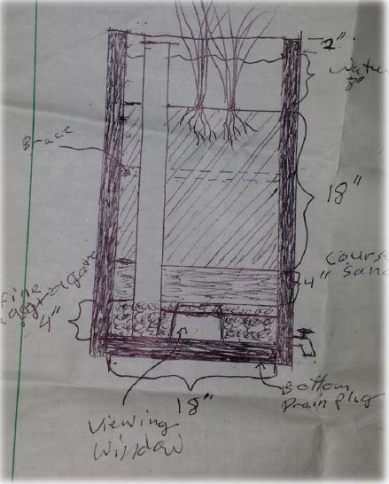
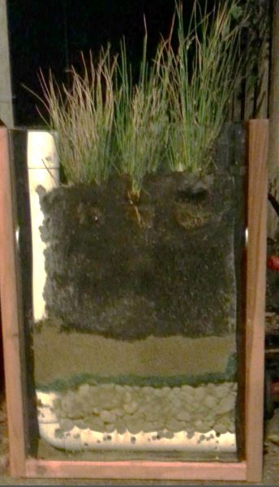

The Watershed Project team was building bioretantion basins in the Richmond Greenway to treat contaminated rainwater that would otherwise get collected around people's homes. The Watershed Project team needed my team and I to help them engage community members in bulding these basins.
After speaking to these community members, we learned that schools in the area lack STEM education and work opportunities. In order to help The Watershed team engage community members and provide STEM opportunites to local youth, we decided to host training sessions in the Greenway parks to teach the youth about the engineering behind bioretention basins, and then recruit them as interns with the Watershed Project as they help build these basins.
We wanted the training sessions to have an hands-on learning component, so we designed a portable bioretention basin that was easy to dismantle and rebuild, and demonstrated the basin’s construction procedures and functions. We also made a booklet that summarized various types of bioretention basins and the science behind them. The demonstration basin and the booklet are currently used by the Watershed Project as planned.
  